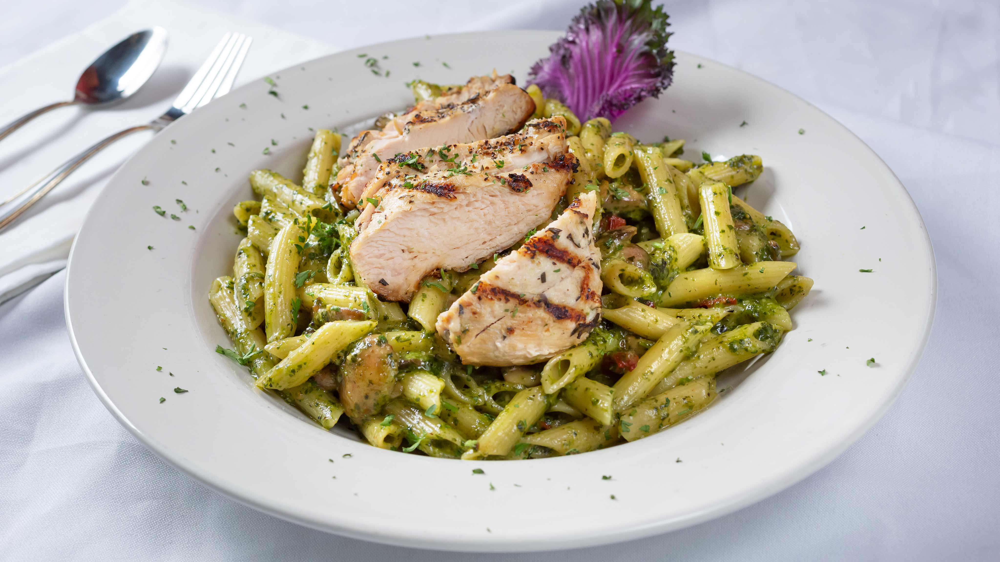

Penne with chicken and pesto

Penne with chicken and pesto
This recipe idea started as just pasta and sauce. Because sometimes that's all you need to be satisfied. But I like to rummage through my pantry, fridge, and freezer to find leftover ingredients that can be added to whatever I'm cooking. That's how this recipe came about!
Ingredients:
- 1 (16 ounce) package penne pasta
- 2 tablespoons butter
- 2 tablespoons olive oil
- 4 skinless, boneless chicken breast halves - cut into thin strips
- 2 cloves garlic, minced
- salt and pepper to taste
- 1 cups heavy cream
- 1/4 cup pesto
- 3 tablespoons grated Parmesan cheese
All necessary steps
- Bring a large pot of lightly salted water to a boil.
- Add pasta and cook for 8 to 10 minutes or until al dente; drain.
- Heat butter and olive oil in a large skillet over medium heat. Saute chicken and garlic until chicken is almost cooked.
- Reduce heat and stir in salt, pepper, cream, pesto and Parmesan cheese
- Cook until chicken is no longer pink inside. Mix in cooked pasta.
- Enjoy!
Back to main page